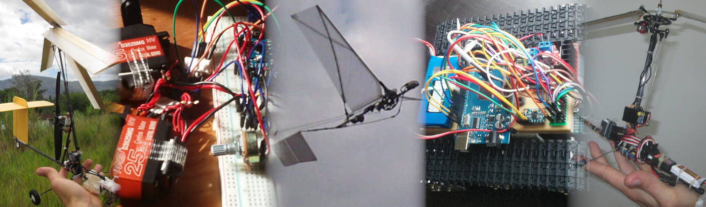

{%- if page.title -%}
{{ page.title }}
{%- endif -%}

{{ content }}
{%- if site.posts.size > 0 -%}
{%- assign date_format = site.minima.date_format | default: "%b %-d, %Y" -%}
{%- for post in site.posts limit: 3 -%}
-
{{ post.title | escape }}
{{ post.date | date: date_format }}
{%- if site.show_excerpts -%}
{{ post.excerpt }}
{%- endif -%}
{%- endfor -%}
{%- endif -%}